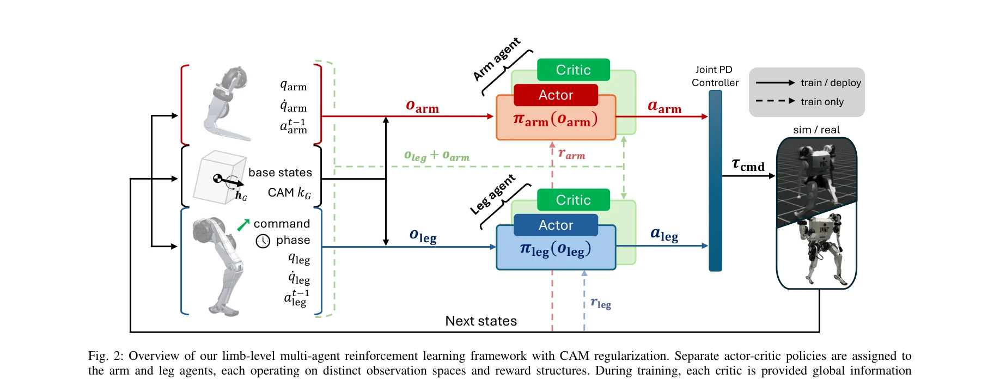
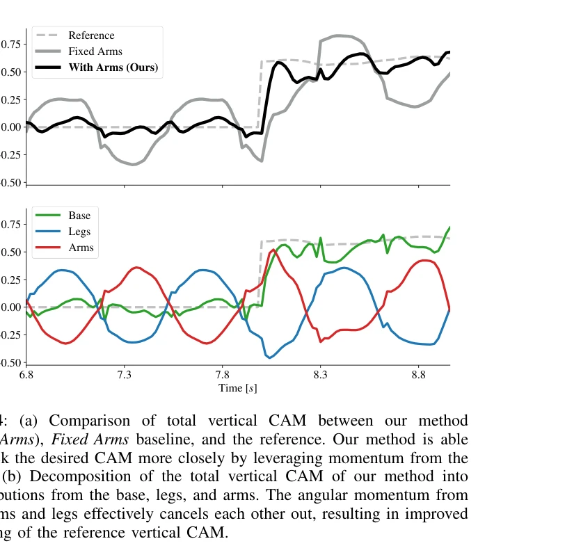

저자: Ho Jae Lee, Se Hwan Jeon, Sangbae Kim | 날짜: 2025-07-05 | URL: https://arxiv.org/abs/2507.04140

Fig. 2: Overview of our limb-level multi-agent reinforcement learning framework with CAM regularization. Separate actor-
인간의 팔 스윙 운동에서 영감을 받아, centroidal angular momentum (CAM) 추적 보상을 통해 다리와 팔을 별도의 에이전트로 취급하는 multi-agent RL 프레임워크를 제시하여 휴머노이드 로봇의 협응 제어를 달성한다.

Fig. 4: (a) Comparison of total vertical CAM between our method
Fig. 2: Overview of our limb-level multi-agent reinforcement learning framework with CAM regularization. Separate actor-
총평: 본 논문은 centroidal dynamics의 물리적 의미와 생역학적 원리를 CTDE 기반 multi-agent RL과 효과적으로 결합하여, 휴머노이드 로봇의 자연스러운 팔 스윙과 향상된 균형 제어를 달성한 독창적이고 실용적인 연구이다.